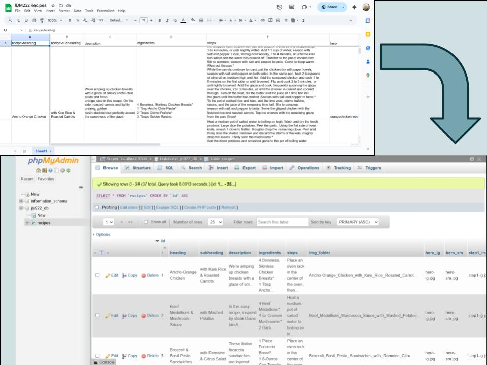

Cookbook Case Study

Overview
For my Web Scripting II project, I turned a collection of recipe PDFs into a website with filters and a search bar using PHP and MySQL. The goal was to move from static documents to a digital interface where it would enhance the user experience by allowing them to browse, update, and use it on different devices. The final product was a fully functioning recipe database developed in VSCode with PHP, MySQL, HTML, CSS, and JavaScript, and man aged through GitHub. It was also developed locally in MAMP with VS Code, and then deployed to Drexel’s hosting environment using Cyberduck and PHPmyAdmin.
Context and Challenge
Background:
My final project for this class focuses on building a recipe website using MySQL and PHP. The project is an individual assignment and is part of a scripting course for web development. Over the course of 10 weeks, only three assignments helped in the production of my final project: Alpha, Beta, and Final Project
Developed on a zero-cost budget, the project aimed to give students practical experience with modern design concepts and back-end scripting. It met the course goals by handling user input, managing databases, and implementing advanced authentication. Throughout the project, I built a strong understanding of server-side programming and learned to apply modern development tools effectively.
Problem:
The original recipe PDFs made it difficult to quickly find content, browse categories, or search through all 37 recipes, and some were missing resources or context. With no filtering or querying capabilities, the assignment required building a backend system capable of organizing and retrieving the content dynamically. At the same time, the provided ZIP file of recipes was messy and overwhelming, filled with unstructured text, unoptimized images, and inconsistent formatting. It was a learning curve as this was my first time work with front-end development with PHP and MySQL for the especially with dozens of recipe pages within 10 weeks. Not only were there limitations of the original PDFs but also the challenge of learning server-side programming while managing a large volume of disorganized content.
Goals & Objectives:
The project required converting all recipe PDFs into structured digital data and storing them in a MySQL database capable of organizing categories, listing ingredients, and displaying recipe details. From there, I needed to build a user-friendly front end that improved readability and accessibility while enabling fast browsing and searching—features the original PDFs couldn’t offer. To support this functionality, I also created an API that delivered all recipe information in JSON format and hosted the final website publicly on Drexel’s servers.
Process and Insight
Target Audience
This project is designed for anyone who enjoys browsing online recipes, whether they’re new to cooking or seasoned in the kitchen. I aimed to create an simple, easy-to-use platform with straightforward features like a search bar and protein filters for smoother browsing.
Database
Because the original content were only in PDF format, each recipe's content was manually transcribed into a structured format on Google Sheets to organize the content into the following categories:
- Recipe ID Number
- Recipe Title
- Recipe Subheading
- Description
- Ingredients List
- Instruction Steps
- Image File Names
- Mobile Image File Names
- Protein Tag
The Google Sheets document was exported as a .csv file which was then imported into phpMyAdmin to test and modify fields as the data evolved locally on MAMP. I utilized asterisks in between each recipe steps to separate them with the PHP command “explode”.
Development
Before coding in PHP, I started with a template using HTML and CSS on VS Code to create my layout and making it responsive. After that I converted the HTML files into PHP files. PHP was useful in repeated elements, like recipe cards and the contents within the recipe pages making it much easier and quicker to create recipe pages and cards for as many recipes I can add to the database.
Final Project
To deploy my website, Cyberduck was used to upload the project to Drexel’s public server. The MySQL database was exported from the localhost, and the SQL file was imported to Drexel's live hosting server through their PHPmyAdmin.
The Solution
Screen Capture Video Link
Live Project Link
The website lays out all the recipes from the database in a organized way. The filter and search bar are at the top and displayed so that users can easily select a filter or reset the filter to catorgize the recipes or search for a certain recipe. The website is responsive so that it is accessible and responsive on all devices.
The Results
This 10-week project significantly expanded my understanding of full-stack development. I learned how to design and integrate a database from scratch, structure content for accessibility, and deploy a live site—skills I had no prior experience with. Working through data cleanup, PHP integration, and server hosting gave me a clearer sense of how dynamic web applications function behind the scenes.
The project also strengthened my time-management and project-planning abilities. Looking back, documenting feedback and following a more structured cycle of research, testing, and design would have made the process more efficient. Still, the experience proved how even simple content can benefit from intentional structure and thoughtful design, and it sparked a deeper curiosity about how data moves through a system—insight I’ll carry into future projects.